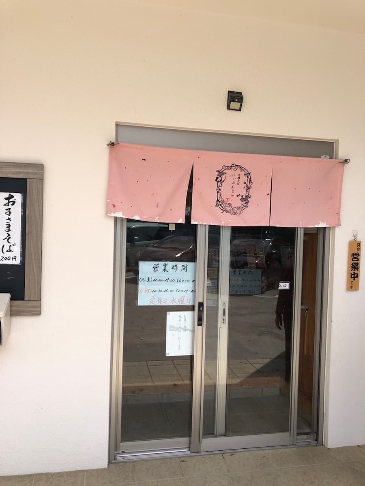
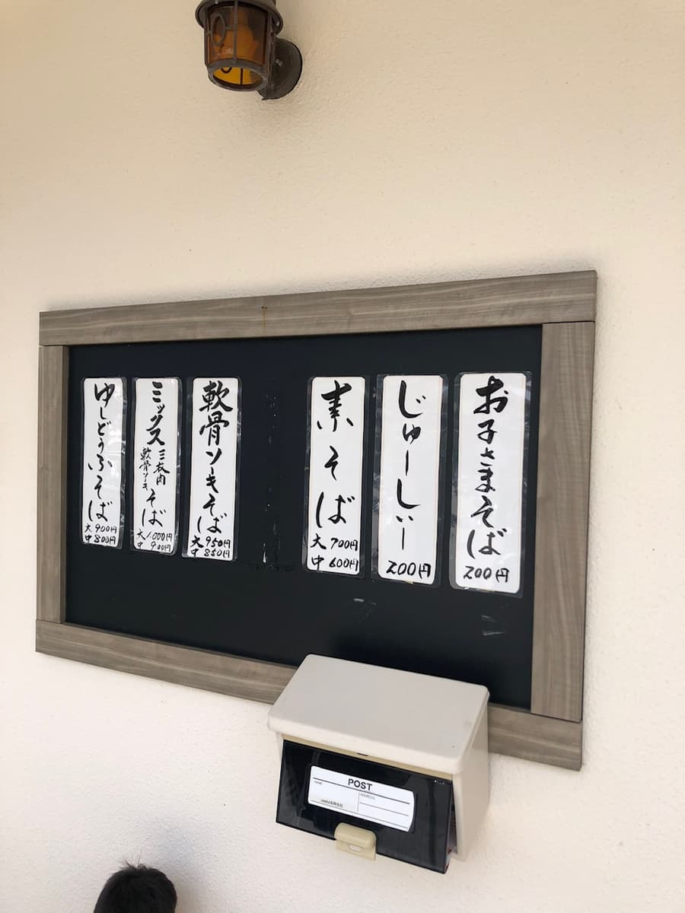
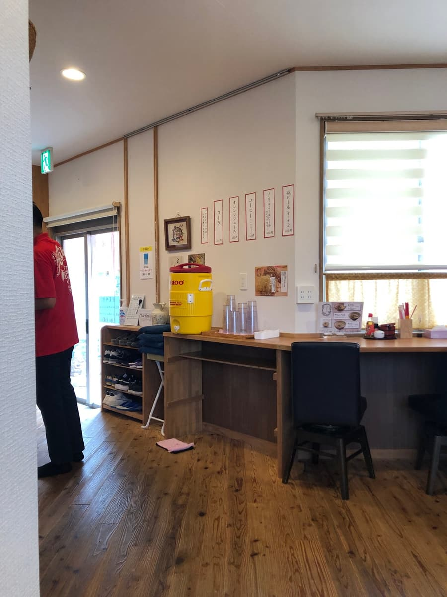
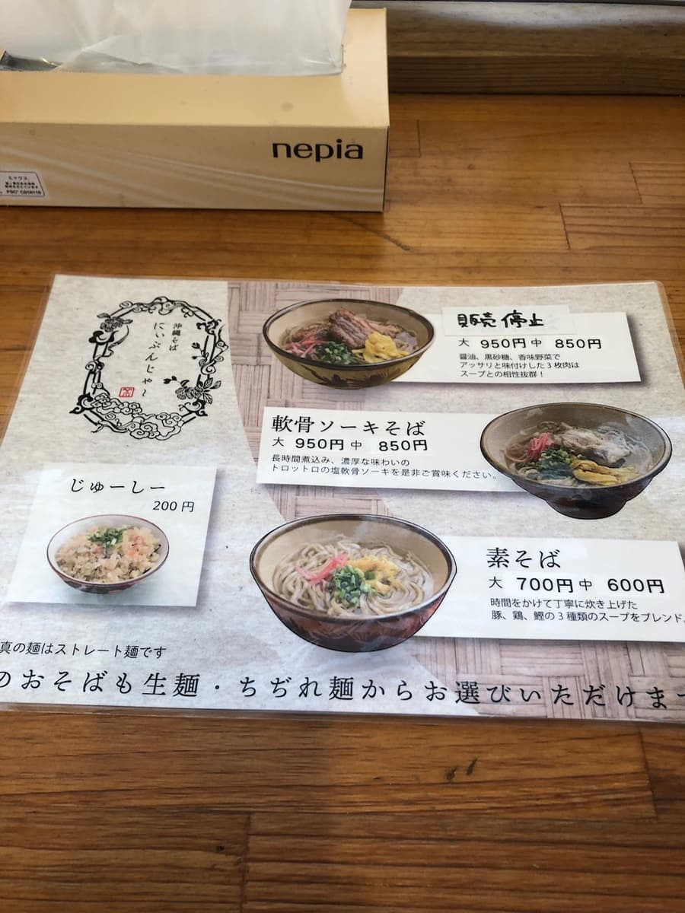
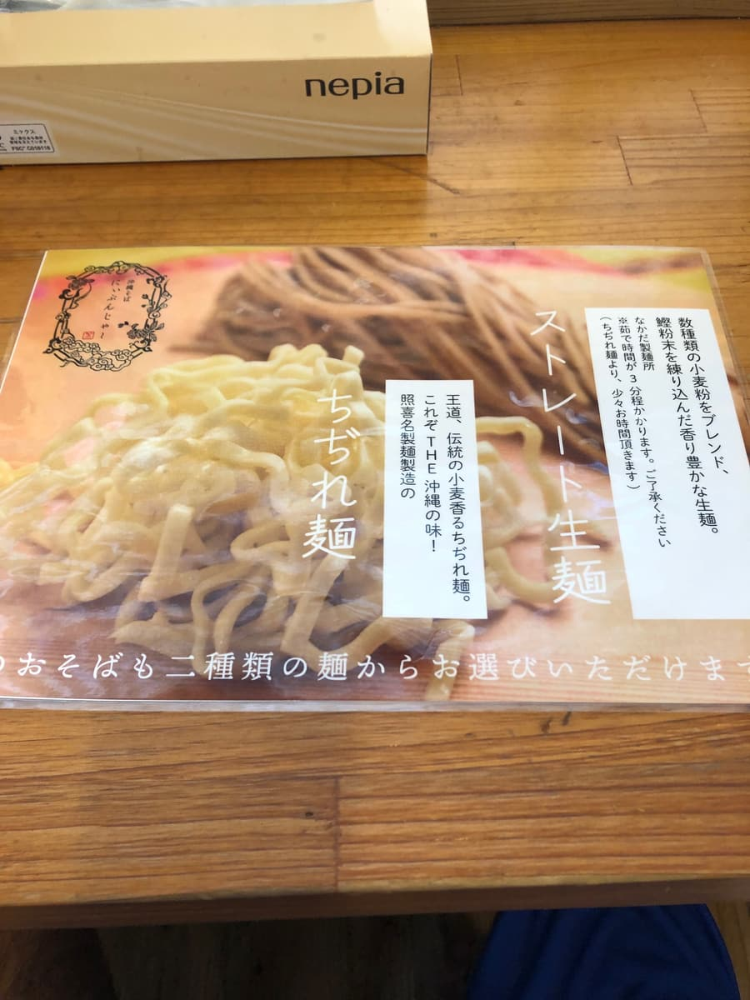
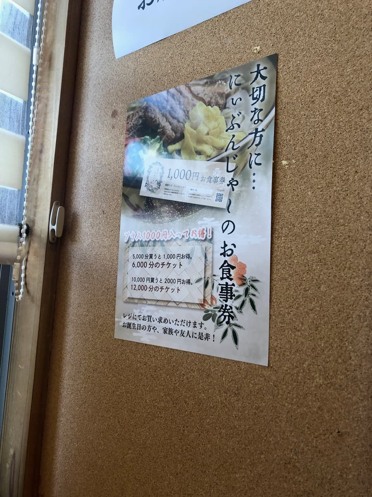
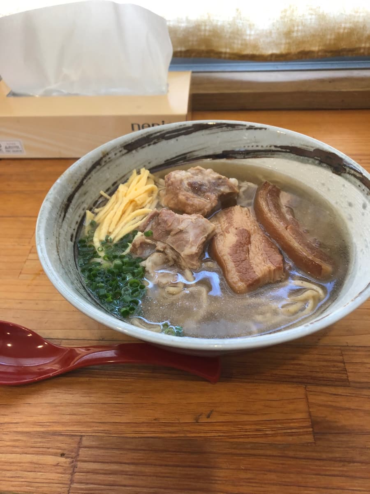
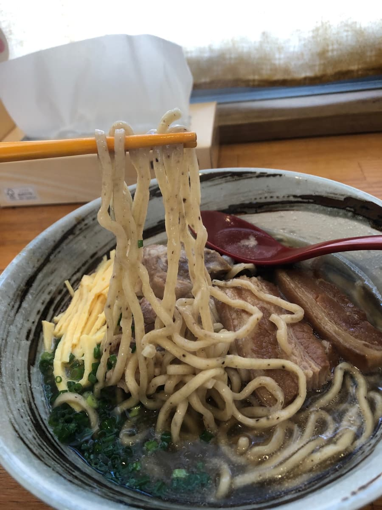
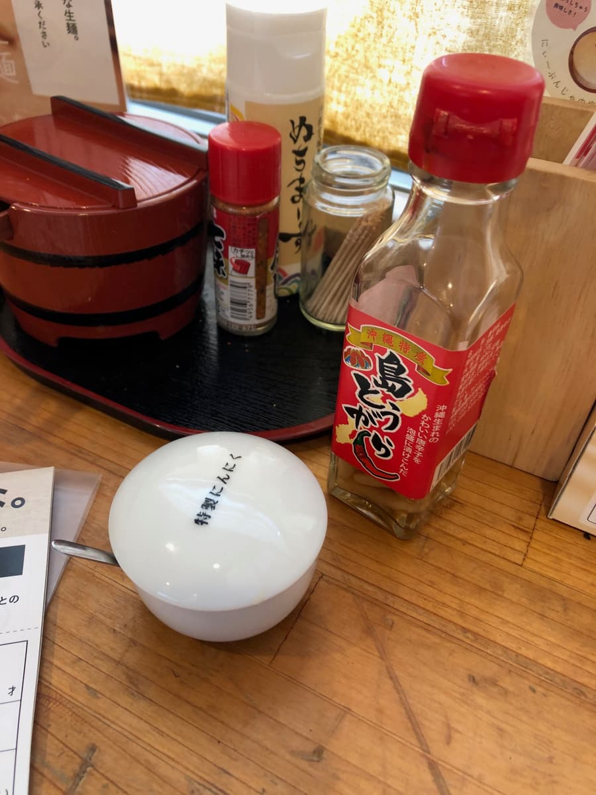

※這篇文章是用AI（Chat gpt4o）製作，再由我部分補寫而成哈哈
2024年10月吃的😄 這次要介紹的是同為集章活動參加店家的「沖繩麵 尼文佳」的體驗。
從抵達店門口的那一刻起，就感受到一股讓人安心的氣氛。外觀上粉紅色的暖簾令人印象深刻，可愛的設計很吸睛呢✨。


溫暖的氛圍，讓人感受到深受當地人喜愛❤️。走進店內，木質的溫潤內裝與整潔感，更增添了家的氣氛。

這天是平日中午，但幾乎被像是當地常客的客人坐滿了！可見是多麼受歡迎的店，讓人期待度滿滿☺️。



這次點的是集章手冊裡介紹的「綜合麵」。這家店的麵條可以從「直麵（生麵）」和「捲麵」2種中選擇，我選了「直麵（生麵）」。看菜單，上面寫著麵條裡揉入了柴魚粉，是有點少見的做法⚡️。看送上桌的麵，麵條帶著淡淡的茶色，確實跟一般沖繩麵的外觀不太一樣。

湯頭是將柴魚、豬、雞3種高湯混合而成。並不是哪一種高湯特別突出，而是很奇妙的味道。是其他店難以嚐到的獨特湯頭，我覺得這就是「尼文佳」的個性。

接著吃一口麵，Q彈感和恰到好處的嚼勁真讓人無法抗拒❗️。不過雖然說揉入了柴魚粉，老實說我並沒有感覺到那股風味很明顯。但麵條本身的品質相當高，是份量十足的一碗。
配料則是滿滿的三層肉和軟骨排骨✨。首先三層肉的調味非常清爽。軟骨排骨燉得很軟嫩，每咬一口鮮味就緩緩擴散。一點都不膩，所以能清爽地吃到最後♥️。
另外，桌上放著「特製大蒜」調味料，我心想「好像拉麵喔」，就加了一點進去。心裡想著沖繩麵加大蒜？試了之後意外地搭‼️ 又多了一種不同的享受方式。這個調味料可以說是「尼文佳」獨有的巧思。

總體來說，「尼文佳」的沖繩麵在重視當地風味的同時，又加入了獨特的巧思，尤其是麵條的Q彈感和調味料的變化讓我印象深刻✨。很能理解為什麼深受當地人喜愛❤️。對於身為觀光客的訪客，也能很有自信地推薦這一家。
評分（9分/15分）：是普通好吃。在「尼文佳」的這一餐，讓我再次感受到沖繩麵的博大精深。下次想挑戰「捲麵」！另外也很想試試其他的餐點✨✨。大家也要不要來這家店看看呢😄❤️！
麵：★★★☆☆（3）
湯頭：★★★☆☆（3）
配料：★★★☆☆（3）